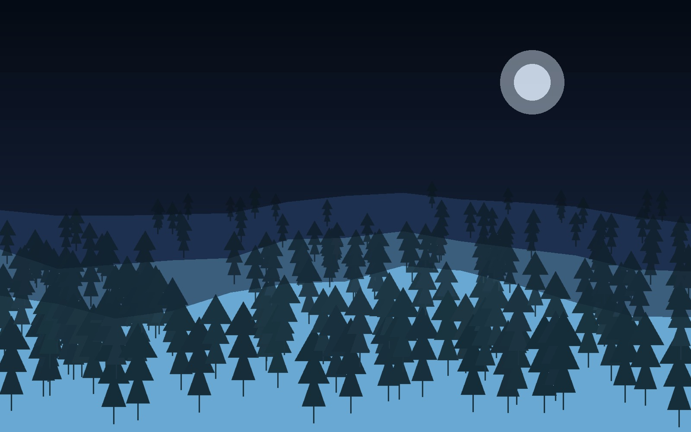
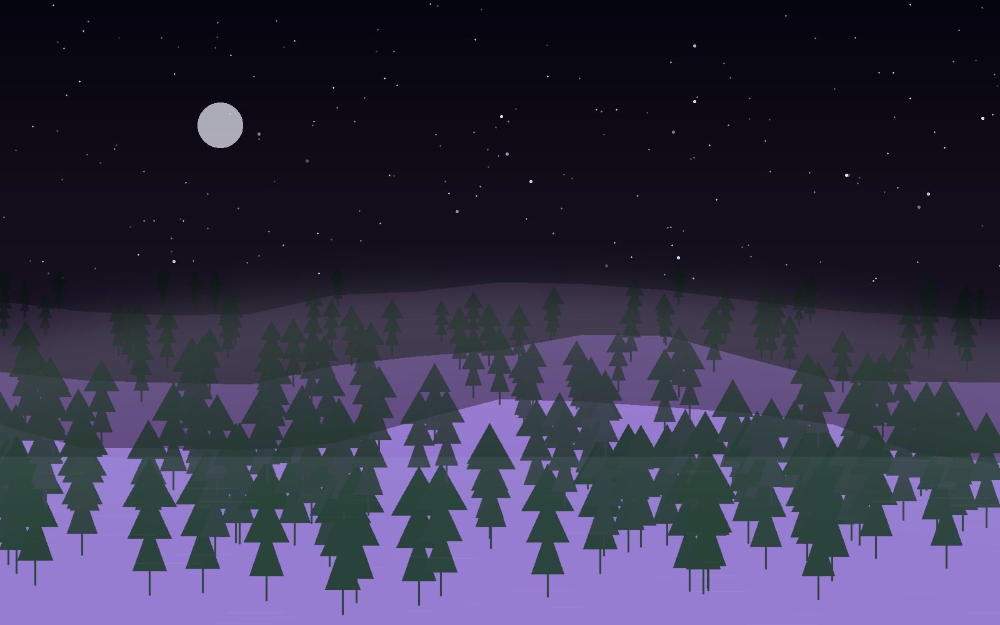
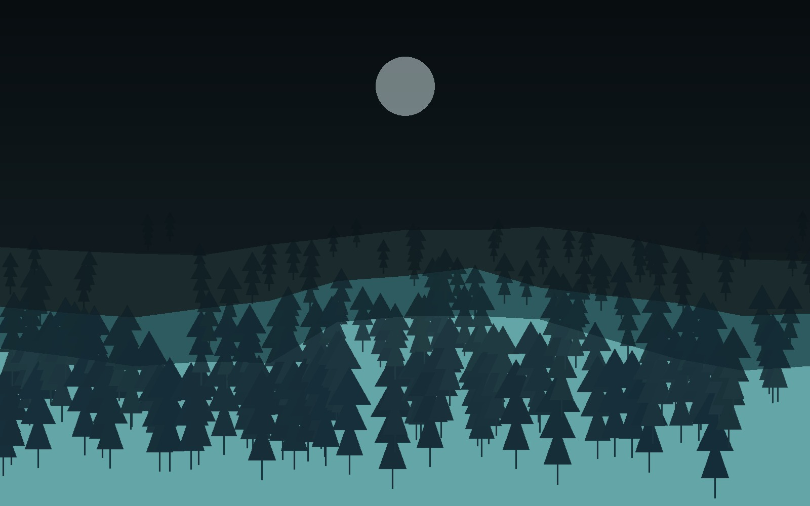
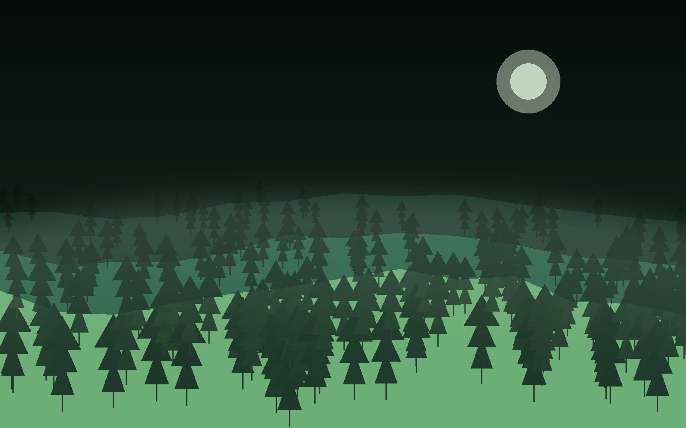

01
Structural Regression
A symbolic-regression and grammar-search direction aimed at modeling complex time-series behavior with hierarchical structure, iterative evaluation, and custom target design.
Open projectLogan Kelsch
I am a Salisbury University senior focused on computational intelligence, software engineering, and applied ML. My work moves across symbolic regression, computer vision, research software, healthcare tooling, and full-stack product builds.
Selected Work
A symbolic-regression and grammar-search direction aimed at modeling complex time-series behavior with hierarchical structure, iterative evaluation, and custom target design.
Open projectA women's-health-focused assistant concept built around clearer triage, better information flow, and modern frontend/backend architecture.
Open projectComputer vision work centered on counting chicks from video data and turning raw detections into cleaner, more useful operational signals.
Open projectREU-centered model training and deployment work that combines dataset handling, model comparison, exports, and a web-facing delivery layer.
Open projectA higher-ed analytics concept built around graph thinking, academic data, and clearer insight into university relationships and outcomes.
Open projectA React + Vite project with themed categories and configurable UI, reflecting an interest in product flow, interface clarity, and deployable web builds.
Open projectAbout
My portfolio is intentionally built around work that looks technical because it is. A lot of what I enjoy sits in ambiguous spaces: designing targets, building evaluation logic, stitching software together, testing ideas, and figuring out how to make complex systems behave.
Across my recent work, that has meant symbolic regression for market modeling, computer vision pipelines, full-stack health tooling, applied analytics, and software for research-heavy workflows.
Profile
Salisbury University senior working across computer science, data science, and research-heavy technical projects.
Python, C, C++, Bash, React, FastAPI, JavaScript, TypeScript, SQL, ML workflows, and HPC-oriented experimentation.
I care about strong direction, practical implementation, and making complicated ideas communicable.
Research engineering, machine learning engineering, and software roles where depth and initiative matter.
01 · Structural Regression
This work is centered on building a richer search process for difficult data, especially time-series settings where simple modeling assumptions break quickly. The direction combines multi-expression programming, grammar ideas, custom targets, and repeated out-of-sample thinking.

02 · Lunara
Lunara reflects a product-facing side of my work: taking a sensitive, high-stakes space and shaping an experience that feels guided, useful, and technically grounded. The project direction combines conversational interfaces, structured intake, and modern web application architecture.

03 · Chick Counting
This project focuses on turning raw video into usable operational information. It sits at the intersection of vision modeling, detection quality, feature extraction, and designing outputs that are useful beyond a demo.

04 · Oyster Detection
Oyster Detection combines model training work with web delivery and deployment concerns. It is a good example of a project that spans research, engineering, and shipping constraints rather than stopping at model training alone.

05 · KnowYourUni
KnowYourUni is aimed at making academic data easier to navigate and more meaningful. The idea leans on knowledge-graph thinking, relationship-aware data modeling, and presenting institutional information in a clearer analytical form.
06 · AI Life Hub / SU AI Club
This project represents the product and frontend side of my work. It is built as a React + Vite app with category flows, settings controls, and a more polished application feel than a simple static site.
Highlights
Computational intelligence, AI, machine learning, research methods, software engineering, and systems-minded implementation.
I tend to be most interested in projects where experimentation, software, and domain knowledge all matter at once.
I like going beyond model training into deployment, usability, evaluation, and better interfaces for real people.
Approach
Contact
This section is wired so you can keep the current details or quickly swap in your resume link, LinkedIn, and any public case studies once you are ready.